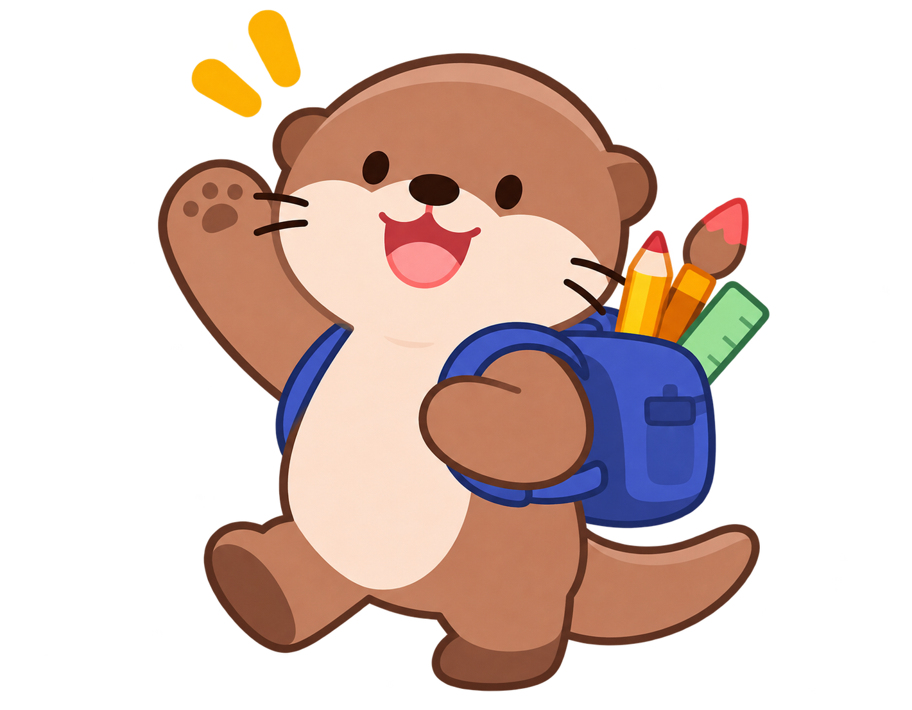
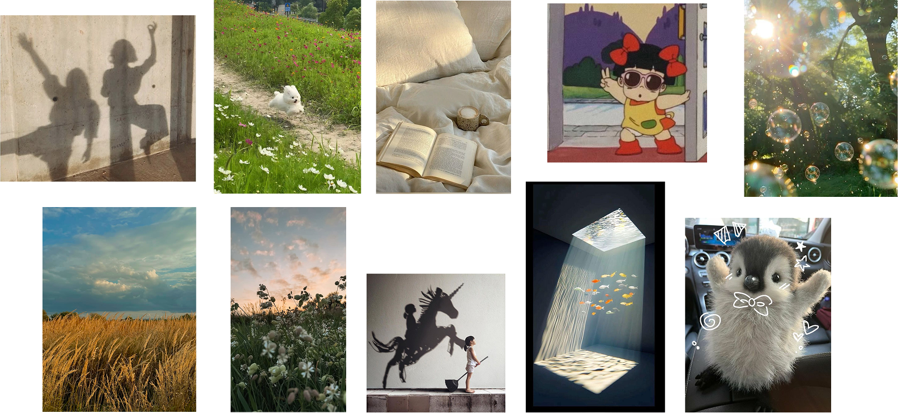
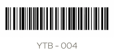

WELCOME TO MY CREATIVE WORLD
Y,OTTER’S BAG
안녕하세요.
디자이너 Y,OTTER 입니다.
스쳐 지나가는 순간을 바라보고, 사라지기 쉬운 생각을 수집해 나만의 시선으로 기록합니다.
이곳은 작은 발견들이 사진과 그림, 영상이 되어가는 과정을 담은 저의 창작 다이어리입니다.
EXPLORE MY WORKS
02 Y’OTTER’S BAG - ABOUT
GET TO KNOW ME
WHO IS Y,OTTER?
01 / INTRODUCTION
익숙한 일상을 새로운 시선으로 관찰하고, 발견한 작은 아이디어를 시각적인 이야기로 발전시킵니다.
무엇을 보여줄 것인지뿐 아니라, 어떻게 기억될 것인지를 고민한 포트폴리오 웹사이트입니다.
02 / TOOLS
03 / EXPERTISE
Video Editing
Photo Graphic
Visual Storytelling
INTRODUCTION VIDEO CLIP
INTRODUCTION VIDEO CLIP 소개 영상 준비 중
MOOD BOARD
평범한 일상 속 작은 즐거움과 특별한 순간을 발견하는 저의 시선을 담았습니다. 자유로움과 순수함, 따뜻한 감성을 바탕으로 호기심 가득한 탐색과 발견의 즐거움을 표현했습니다.

03 Y’OTTER’S BAG - WORKS
WHAT’S IN
Y,OTTER’S BAG
호기심이 모여 완성된 작업들을 소개합니다.
04 Y’OTTER’S BAG - CONTACT
SEE YOU Y,OTTER!
THE END? NOT YET!
당신의 아이디어는 무엇인가요? Y’OTTER’S BAG에서 우리의 다음 이야기가 시작됩니다.
Y,OTTER’S BAG / BOARDING PASSFLIGHT
FROMYOUR IDEA
TOY,OTTER’S BAG
PASSENGERYOU
STATUSCREATIVE
GATEREADY TO GO

SNS 및 이메일 주소가 제공되지 않아 아이콘은 링크 없이 표시됩니다.